Nugget Nihongo / SSW Konstruksi
A live Japanese-learning PWA for Indonesian workers preparing for Japan's Specified Skilled Worker (Konstruksi) exam. I directed the entire build — architecture, content, and QA — end-to-end, acting purely as prompt director rather than hands-on producer.
- Built on React 19 + Vite 6, with a spaced-repetition engine (ts-fsrs)
- Run through a multi-agent relay workflow — each AI agent picks up its task from one shared handoff file, so work carries over cleanly between sessions instead of me re-explaining context every time
- Standard practice: run the same brief across multiple AI agents and compare outputs before anything ships — the judgment-and-consistency layer, not the production layer
- Directed entirely from a phone — no laptop, no formal programming background
I personally used the app to study for and pass the SSW Konstruksi Lifeline & Peralatan exam module (27 Apr 2026). Two junior candidates I've mentored passed the same exam on 20 Aug 2026, studying from that same v87 build — so the content has now held up under real exam conditions for three different people, across two sittings four months apart, not just the one who built it.
Still being polished, already in daily use
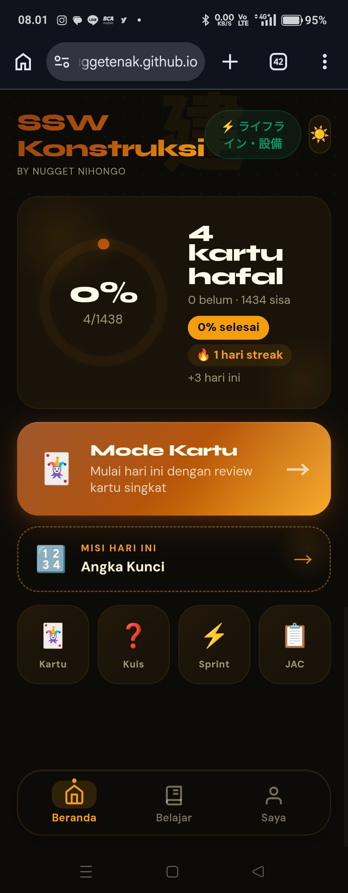
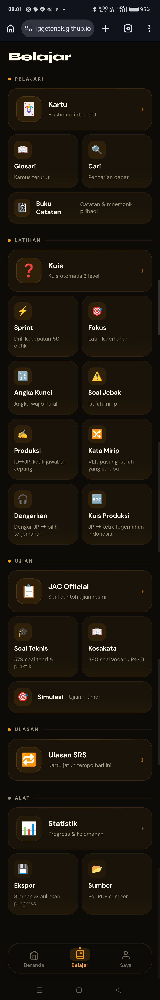
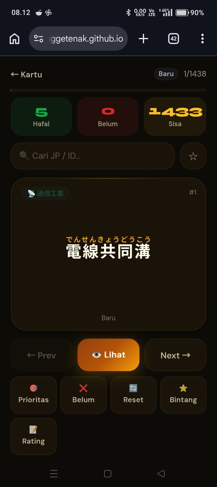
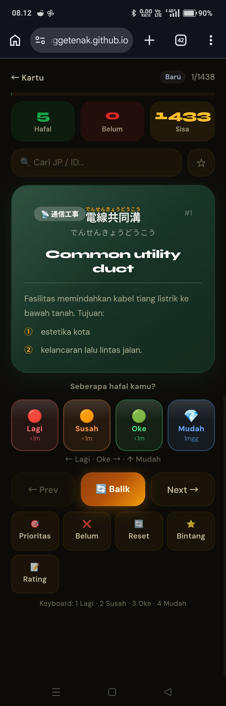
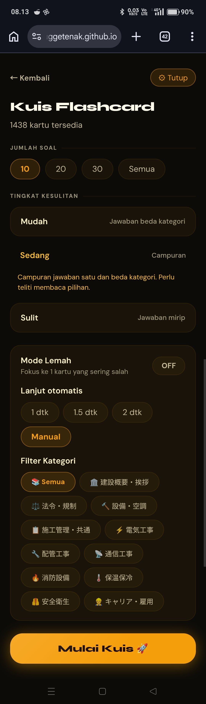
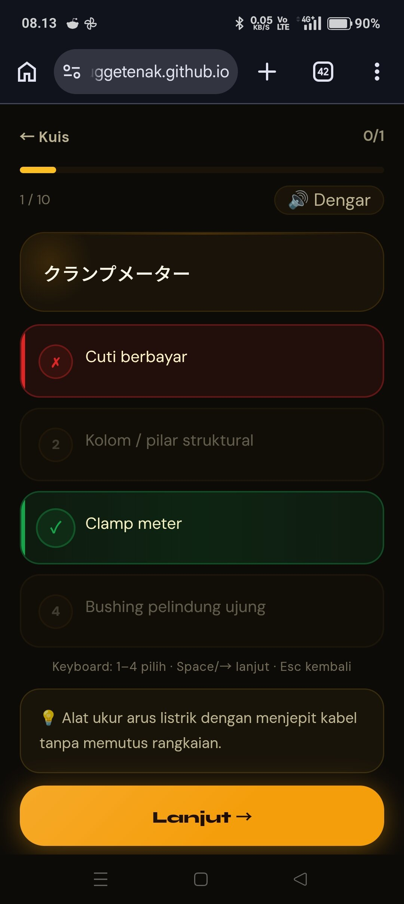
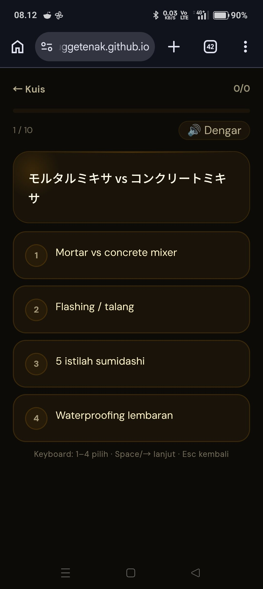
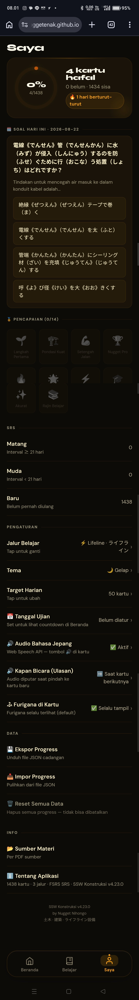
The monolith my 2 juniors passed with
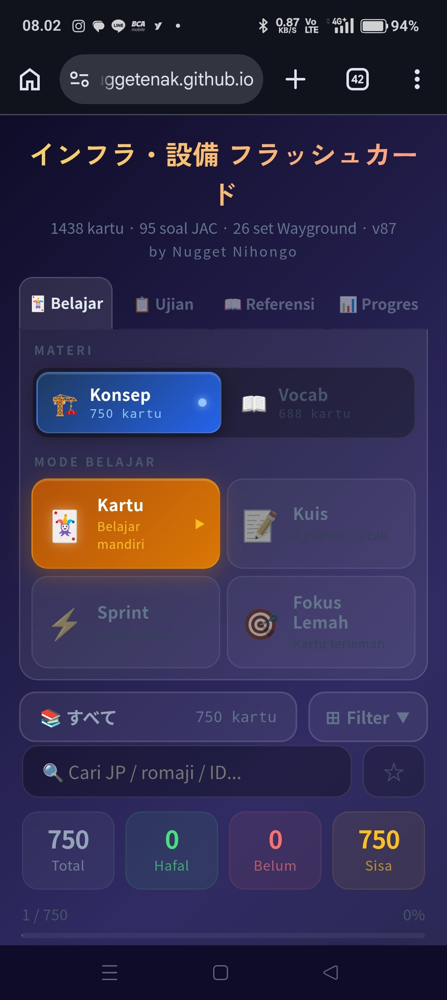
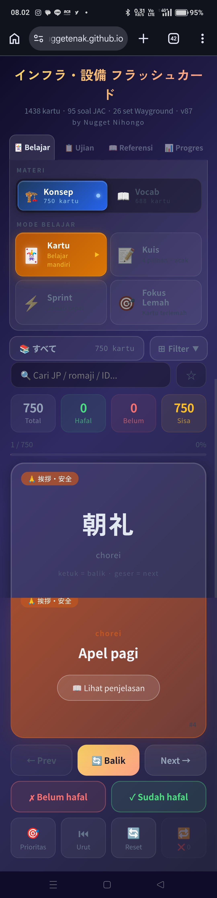
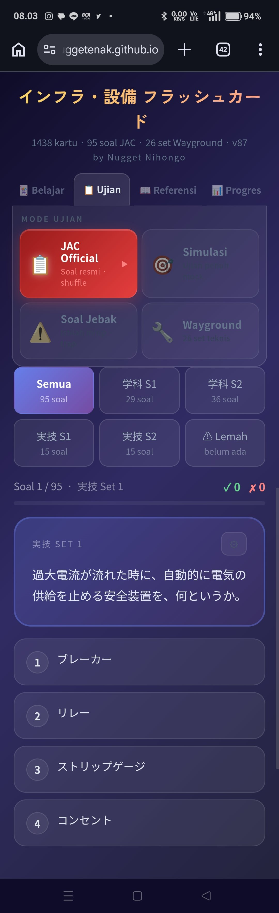
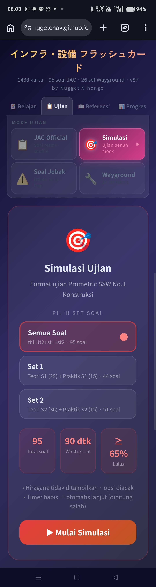
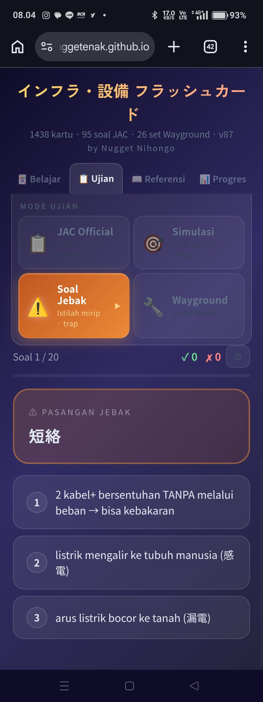
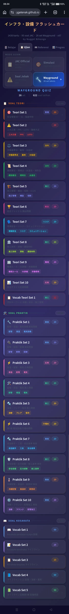
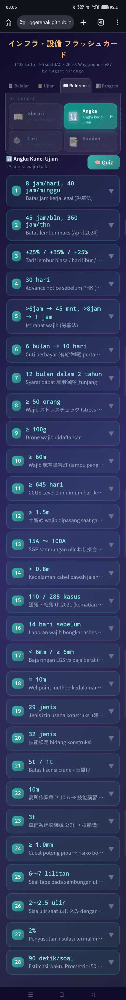
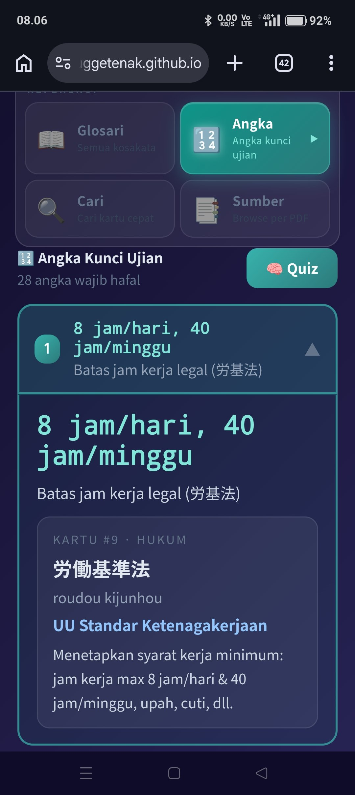
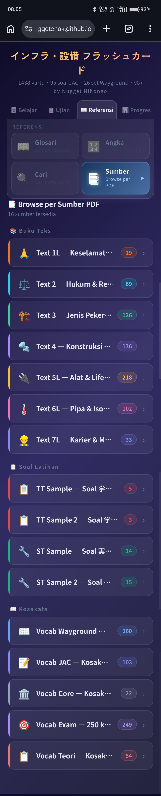
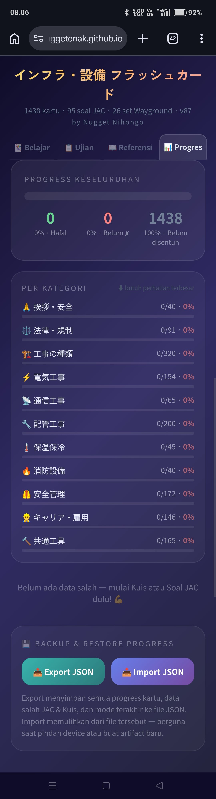
1,031 cards, five branches, no flat translation pairs
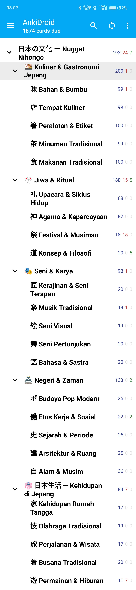
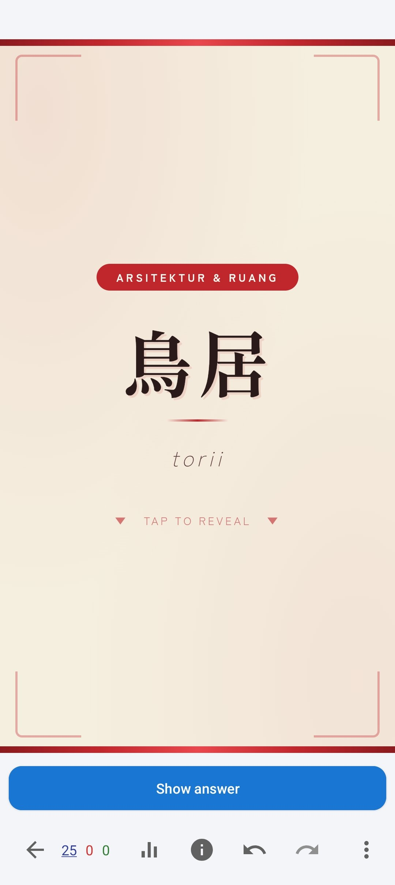
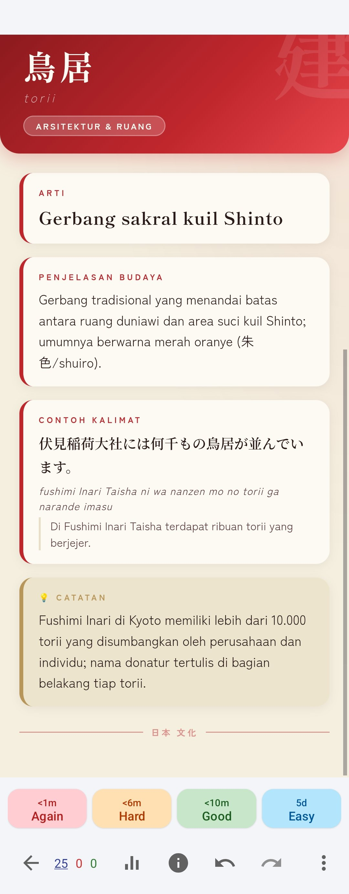
1,861 cards, four branches, the exact terms the exam tests
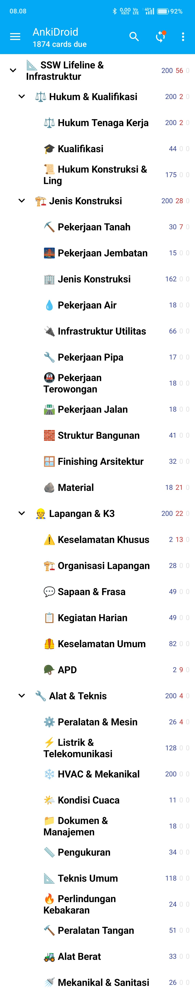
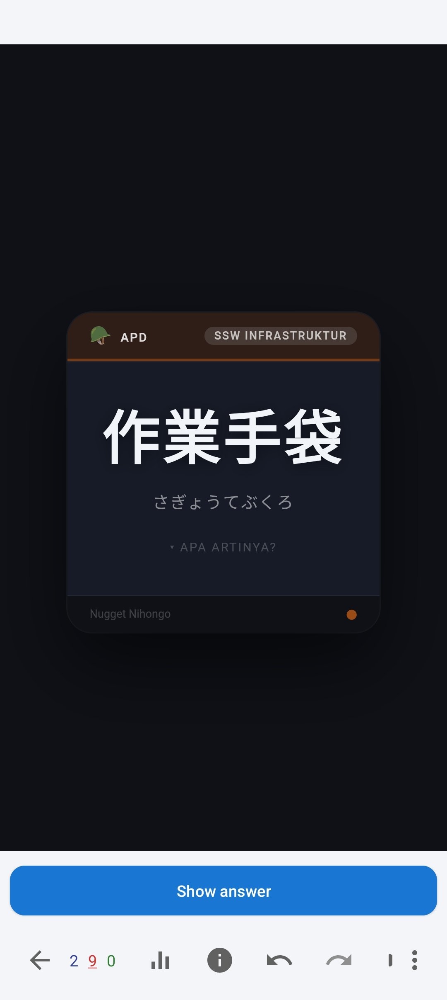
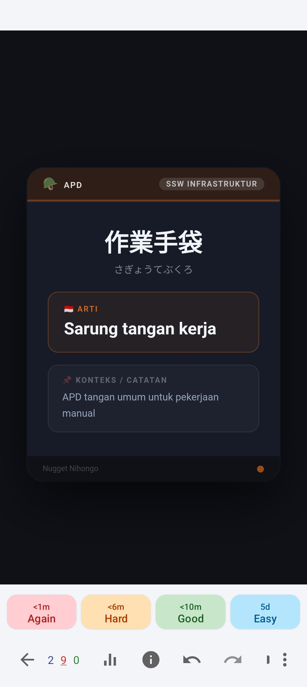
Same skill, different pipelines
Multi-agent academic corpus
Ran a 5-agent system — separate agents for integration, vocabulary, book indexing, grammar, and UI — to build a citation-backed research corpus and structured JLPT vocabulary sets, each following a strict schema I set and enforced.
日本の文化 — Japanese Culture deck
A 5-branch, 30-category cultural taxonomy — cuisine, history & era, daily life, arts & crafts, ritual & spirituality. Every card carries example sentences and cultural notes, not just a translation pair.
SSW Lifeline & Infrastruktur deck
A 4-branch, 32-category construction-industry taxonomy — site safety, tools & technical, construction types, labor law & qualifications — the exact terminology tested in the exam I passed.
Relevant professional experience
Job Matching Assistant Intern — LPK TimeDoor Bali
Daily communication with candidates and partner companies; keep documentation and interview scheduling consistent across multiple concurrent applicants.
Manager — Cerita Hati Coffee & Florist
Led a team of 8; owned procurement, stock, cashier operations, and accounting for a café serving up to 300 customers/day across a 6-supplier network.
F&B Service, multiple roles
Including main-course buffet service for 200–700 guests/day at a 5-star hotel under HACCP procedures — fast-paced, high-volume, deadline-driven work.
Why this fits
- ✓
The role needs someone who directs AI tools, not someone who operates them by hand — that's the entire premise of everything above.
- ✓
The role needs judgment and consistency, not filming/editing skills — I already run a compare-and-QA habit across AI agent outputs before anything ships.
- ✓
Photography/cinematography background — a head start on directing an AI cinematographer with actual intention, not guessed prompts.
- ✓
Comfortable being the single point of continuity across a fast-moving AI pipeline, including keeping non-technical stakeholders in the loop.